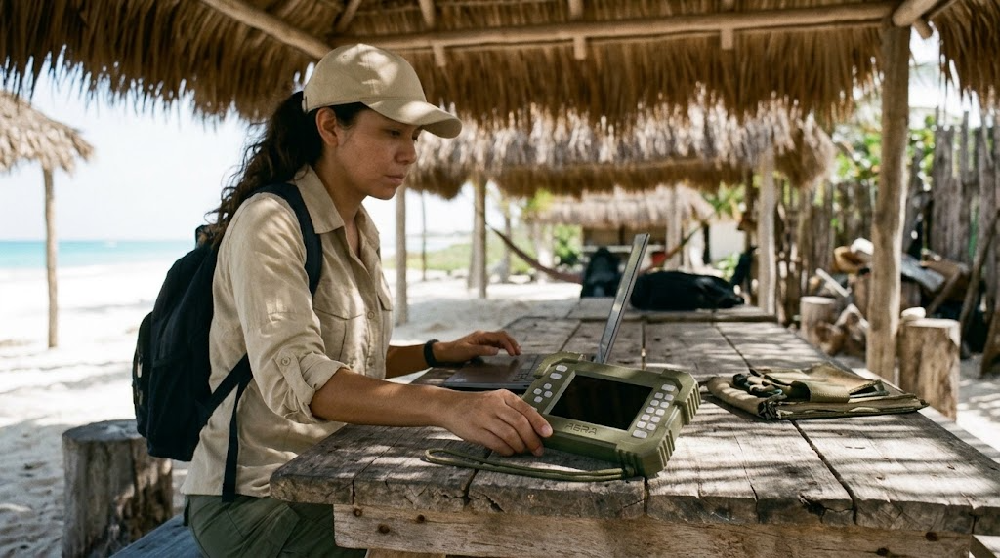
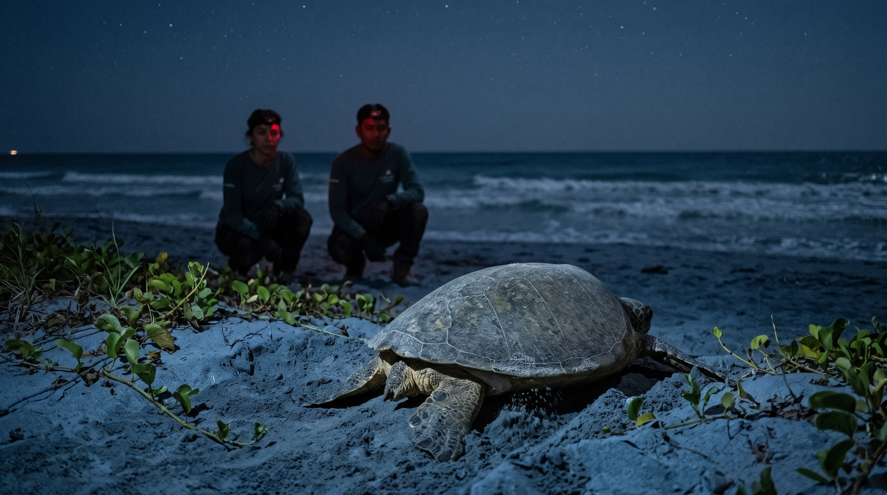
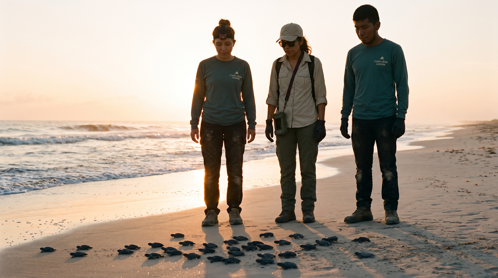
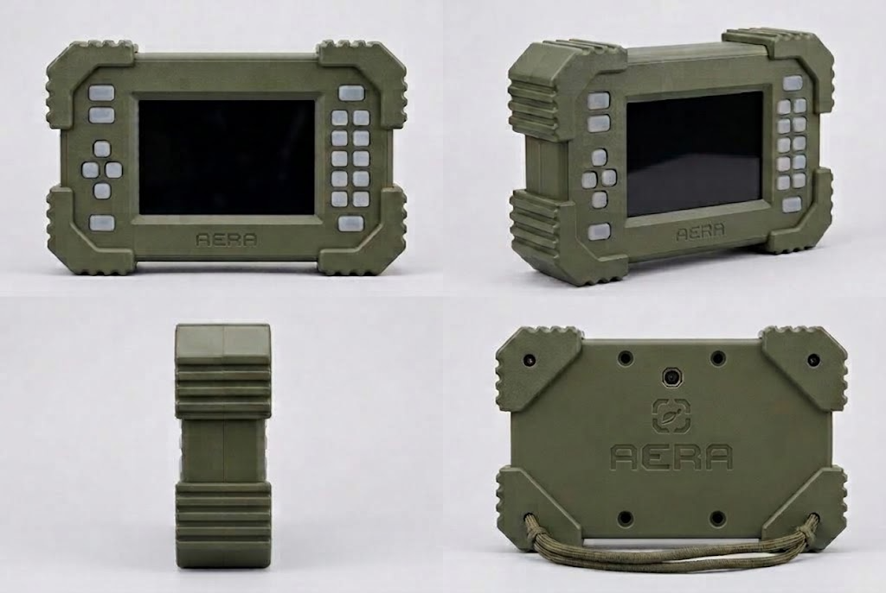
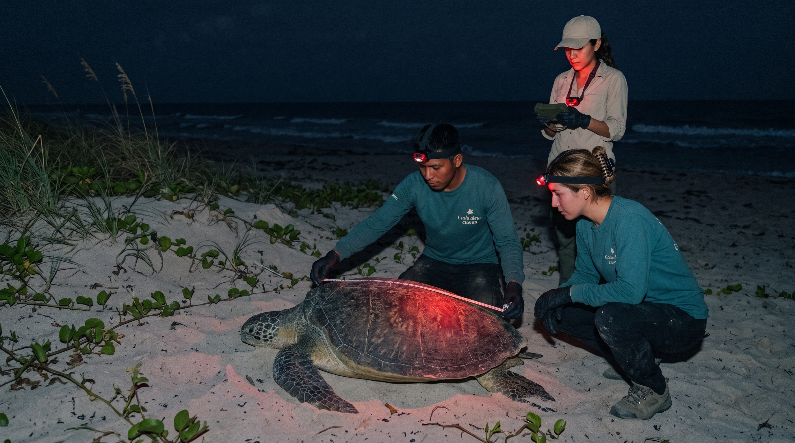
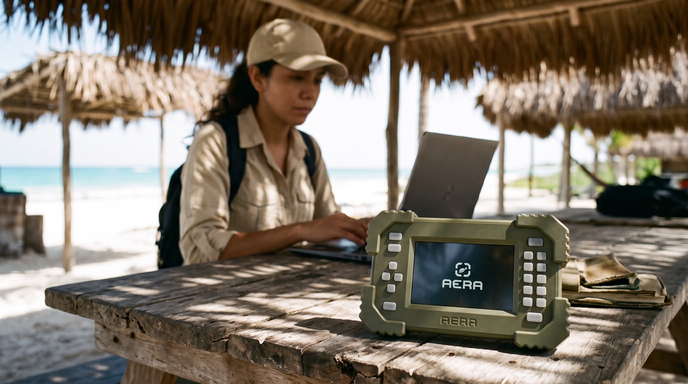

01 — HARDWAREDiseño e ingeniería
Construir, probar, aprender.
El proyecto explora la integración de hardware y software en un dispositivo orientado a la recopilación de datos ambientales.
↗.png)

Tecnología en desarrollo · Contextos costeros
AERA es un dispositivo tecnológico en desarrollo que busca apoyar la recopilación de datos ambientales durante el trabajo de campo.
Explora el proyecto Ver video de AERAObservar para comprender
La información ambiental puede contribuir al estudio de los ecosistemas costeros y apoyar el trabajo de investigación y conservación en campo.
El contexto del proyecto
Diseñado para explorar
AERA es un dispositivo wearable en desarrollo que integra tecnologías orientadas a la recopilación de datos ambientales en un formato compacto.
Prototipo en desarrollo. Las funciones y componentes aún requieren integración y validación.
Conoce su funcionamiento
Del concepto al campo

01 — HARDWAREDiseño e ingeniería
El proyecto explora la integración de hardware y software en un dispositivo orientado a la recopilación de datos ambientales.
↗
02 — CONTEXTOConservación en contexto
La propuesta parte de las necesidades del trabajo de campo en entornos costeros y de quienes estudian y acompañan estos ecosistemas.
↗Una mirada al proyecto
Un recorrido visual por el dispositivo y el trabajo de campo del que surge.
El video presenta una representación del prototipo. Sus funciones se encuentran en desarrollo y no deben interpretarse como validadas.

Un proyecto en evolución
Un proyecto en desarrollo que busca acercar la tecnología a las necesidades de investigación y conservación en entornos naturales.
Explora el proyecto